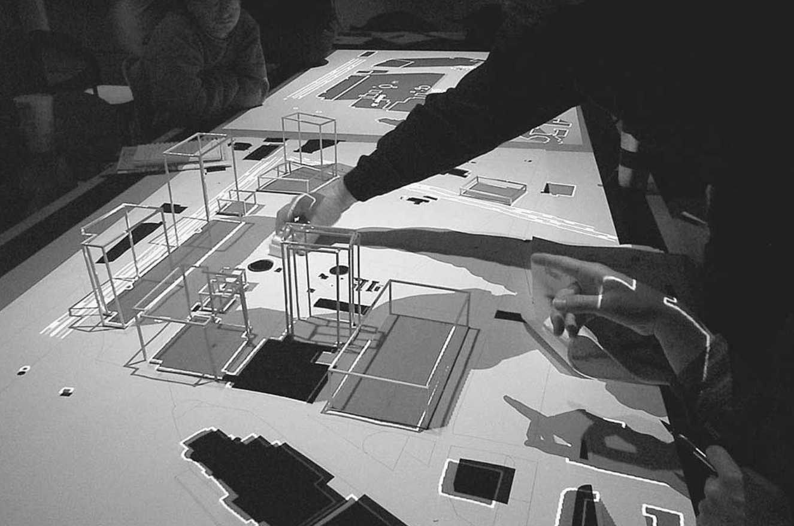
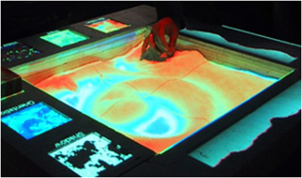
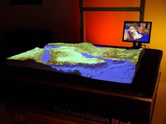
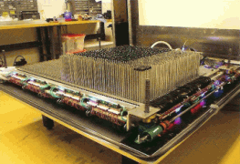
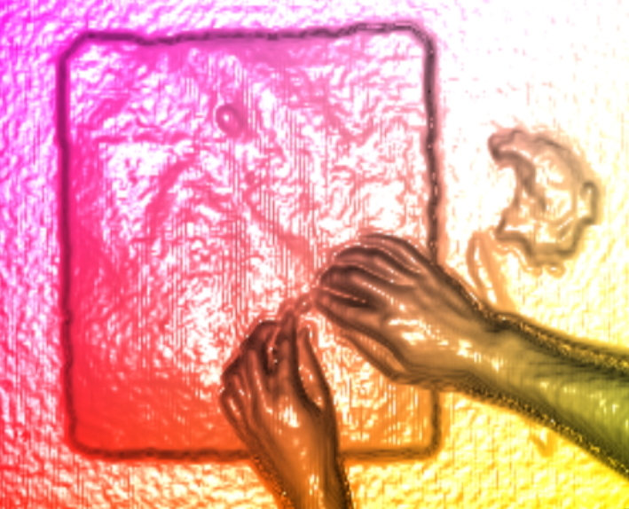
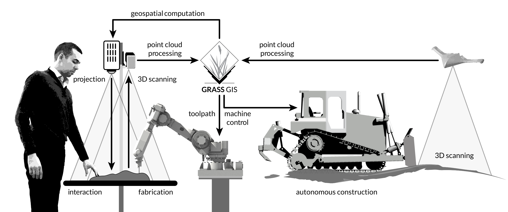

Cartography and Geospatial Analysis
Brendan Harmon

North Carolina State University
The art and science of cartography
XKCD on
map projections

Source: XKCD
Mercator

Source: XKCD
Robinson

Source: XKCD
Hobo-Dyer

Source: XKCD
Globe

Source: XKCD
Goode Homolosline

Source: XKCD
Dymaxion

Source: XKCD
Waterman Butterfly

Source: XKCD
Map morphology
Time-lapse morphing model with 21 maps of Venice
Source: Venice Atlas, EPFL
Geoid

Source: Ales Bezdek
Geographic Information Systems
Tools for geospatial data management and analysis, image processing, graphics and maps production, spatial modeling, & visualization

GRASS GIS Command Line Interface (CLI) & Graphical User Interface (GUI)
A rich ecosystem of desktop GIS
An emerging ecosystem of web GIS
Geospatial modeling
Triangulated mesh from lidar data
Spatiotemporal modeling
Dune evolution time series
Source: NCSU GeoForAll Lab
Geospatial analysis


Orthophotograph, unsupervised image classification, & derived landcover
Geospatial simulation
Source: GNU Free Documentation License 1.2 GRASS Dev. Community
GIS
as a reseach tool
- Map and visualize patterns and processes to study space and tell a story
- Analyze spatial data to understand why it matters
- Simulate spatiotemporal processes to forecast what could happen
Design
Creative design process
- Research
- Ideation
- Expression
- Critique
- ...
Design project lifecycle
- Concept design
- Schematic design
- Design development | detailed design
- Construction documentation
- Construction administration
Research as Design | Design as Research
A rapid iterative process of:
- Research + ideation
- Critical analysis
- ...
Tangible interfaces for geospatial modeling

Couple physical and digital geospatial models
Carlo Ratti et al. 2004. Tangible User Interfaces (TUIs): A Novel Paradigm for GIS. Trans. GIS 8, 4 (2004), 407–421. DOI:http://dx.doi.org/10.1111/j.1467-9671.2004.00193.x
Augmented architectural models
Urp, 1996-2001
John Underkoffler and Hiroshi Ishii. 1999. Urp: a luminous-tangible workbench for urban planning and design. In CHI ’99 Proceedings of the SIGCHI conference on Human Factors in Computing Systems. New York, New York, USA: ACM Press, 386–393. DOI:http://dx.doi.org/10.1145/302979.303114
Augmented sandboxes

Sandscape & Illuminating Clay, 2002-2004
H. Ishii, C. Ratti, B. Piper, Y. Wang, A. Biderman, and E. Ben-Joseph. 2004. Bringing Clay and Sand into Digital Design — Continuous Tangible user Interfaces. BT Technol. J. 22, 4 (2004), 287–299. DOI:http://dx.doi.org/10.1023/B:BTTJ.0000047607.16164.16
Actuated pin tables
 XenoVision Mark III Dynamic Sand Table, 2004
Source: Xenotran
Augmented sandboxes


Tangible Geospatial Modeling System, 2006-2010
Laura Tateosian, Helena Mitasova, Brendan A. Harmon, Brent Fogleman, Katherine Weaver, and Russell S. Harmon. 2010. TanGeoMS: Tangible Geospatial Modeling System. IEEE Trans. Vis. Comput. Graph. 16, 6 (2010), 1605–12. DOI:http://dx.doi.org/10.1109/TVCG.2010.202
Source: NCSU GeoForAll Lab
Augmented architectural models

Collaborative Design Platform, 2011-present
Gerhard Schubert, Sebastian Riedel, and Frank Petzold. 2013. Seamfully connected: Real working models as tangible interfaces for architectural design. In Global Design and Local Materialization. Springer-Verlag Berlin Heidelberg, 210–221. DOI:http://dx.doi.org/10.1007/978-3-642-38974-0_20
Source: Dr.-Ing. Gerhard Schubert, Technische Universität München
Augmented sandboxes

Augmented Reality Sandbox, 2012-present
Source: Oliver Kreylos, UC Davis
Actuated pin tables

inFORM, 2013-present
Sean Follmer, Daniel Leithinger, Alex Olwal, Akimitsu Hogge, and Hiroshi Ishii. 2013. inFORM: dynamic physical affordances and constraints through shape and object actuation. In Proceedings of the 26th annual ACM symposium on User interface software and technology - UIST ’13. New York, New York, USA: ACM Press, 417–426. DOI:http://dx.doi.org/10.1145/2501988.2502032
Augmented sandboxes


The Augmented REality Sandtable (ARES), 2015-present
Charles R. Amburn, Nathan L. Vey, Michael W. Boyce, and MAJ Jerry R. Mize. 2015. The Augmented REality Sandtable ( ARES ). US Army Research Laboratory. ARL-SR-0340. DOI:http://dx.doi.org/10.13140/RG.2.1.2685.0006
Source: US Army Research Laboratory
Tangible Landscape
A tangible user interface powered by open source GIS
2013-present
Tanigble interaction with GIS
With Tangible Landscape you can hold a GIS in your hands - feeling the shape of the earth, sculpting its topography, and directing the flow of water.
How it works

Tangible Landscape couples a digital and a physical model through a continuous cycle of 3D scanning, geospatial modeling, and projection
Realtime 3D scanning
with Kinect sensor
Interactions

| surface | points | lines | areas | areas |
Features
A collaborative environment for tangible freeform modeling, object detection, real-time geospatial analytics, 3D rendering, and virtual reality
Payam Tabrizian, Anna Petrasova, Brendan Harmon, Vaclav Petras, Helena Mitasova, and Ross Meentemeyer. 2016. Immersive Tangible Geospatial Modeling. In Proceedings of the 24th ACM SIGSPATIAL International Conference on Advances in Geographic Information Systems. GIS ’16. San Francisco, CA: ACM, 88:1-88:4. DOI:http://dx.doi.org/10.1145/2996913.2996950
Applications: visibility
Visibility and line of sight
Applications: solar analysis


Solar irradiation and cast shadows
Applications: trail planning


Optimized trail routing between waypoints based on energetics, topography, and cost maps with feedback including trail slopes and viewsheds
Applications: 3D soil moisture exploration


Applications: wildfire spread
Designing and testing fire breaks
Applications: erosion control


Modifying land cover with colored felt
Applications: urban growth
Simulation of urban growth scenarios with FUTURES model
Applications: coastal flooding


Save houses from coastal flooding by building coastal defenses
Structured problem-solving with rules, challenging objectives, and scoring
Applications: termite infestation


Manage the spread of termites across a city by treating city blocks using a model of biological invasion in R
User studies
Tangible modeling
- is highly intuitive
- improves users' 3D spatial performance
- enables a rapid, iterative process of form-finding and critical analysis
Brendan A. Harmon. 2016. Embodied Spatial Thinking in Tangible Computing. In TEI ’16: Proceedings of the Tenth International Conference on Tangible, Embedded, and Embodied Interaction. Eindhoven, Netherlands: ACM Press, 693–696. DOI:http://dx.doi.org/10.1145/2839462.2854103
Brendan A. Harmon, Anna Petrasova, Vaclav Petras, Helena Mitasova, and Ross K. Meentemeyer. 2016. Tangible Landscape: cognitively grasping the flow of water. In The International Archives of the Photogrammetry, Remote Sensing and Spatial Information Sciences. Prague: International Society of Photogrammetry and Remote Sensing. DOI:http://dx.doi.org/10.5194/isprsarchives-XLI-B2-647-2016
Brendan A. Harmon et al. 2017. Cognitively Grasping Topography with Tangible Landscape. In review.
Design implications
- Rapid conceptual design with scientific analytics
- Easily engage stakeholders and the public in the design process
- New ways to teach grading, hydrology, & geomorphology
Future work
Planting with Tangible Landscape

Planting tangible 3D trees with realtime rendering
Tangible Landscape with robotic fabrication

In-situ robotic fabrication for Tangible Landscape
Tangible Landscape with robotic fabrication, streaming data, and autonomous construction
Bi-directionally coupling physical and digital landscapes